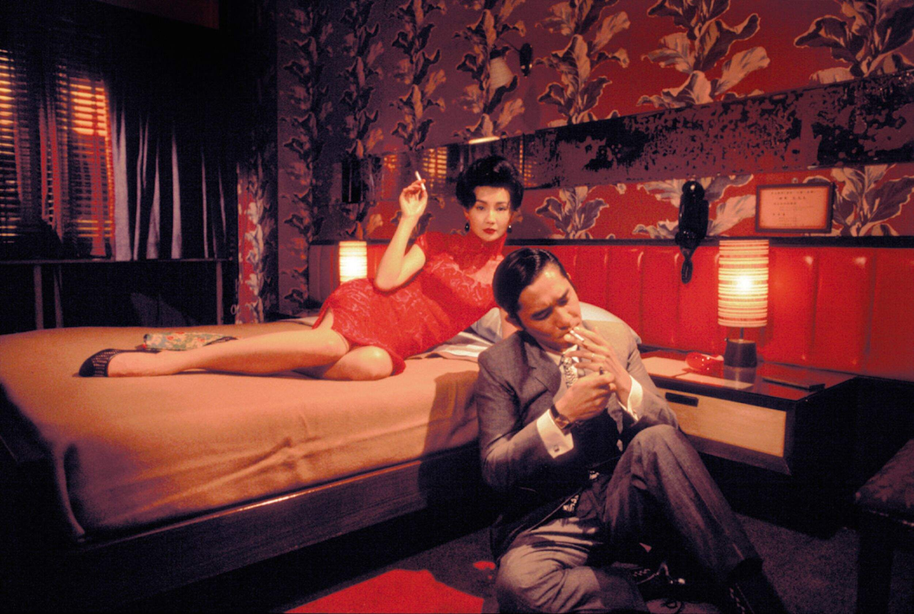

Legacy
On Rotten Tomatoes, the film holds an approval rating of 92% based on 187 reviews, with an average rating of 8/10. The website's critical consensus reads: "An exquisitely shot showcase for Maggie Cheung and Tony Leung that marks a somber evolution of Wong Kar-wai's chic style, In the Mood for Love is a tantric tease that's liable to break your heart." On Metacritic, the film has a weighted average score of 87 out of 100 based on 28 critic reviews, indicating "universal acclaim."
Roger Ebert of the Chicago Sun-Times gave the film three stars out of four, calling it "a lush story of unrequited love." Elvis Mitchell, writing for The New York Times, referred to it as "probably the most breathtakingly gorgeous film of the year."
Peter Travers of Rolling Stone wrote that "in the hands of a hack, In the Mood for Love could have been a snickering sex farce. In the hands of Wong Kar-wai ... the film is alive with delicacy and feeling." Peter Walker of The Guardian, describing it as his "favourite film," wrote that it provides "profound and moving reflections on life's fundamentals. It's a film about, yes, love; but also betrayal, loss, missed opportunities, memory, the brutality of time's passage, loneliness—the list goes on." David Parkinson of Empire awarded the film five out of five stars, writing that "the performances are masterly, and the photography beautiful. It's a genuinely romantic romance and makes for sublime cinema."
In the Mood for Love made HK$8,663,227 during its Hong Kong run. On 2 February 2001, the film opened in six North American theatres, earning $113,280 ($18,880 per screen) in its first weekend. It finished its North American run with a gross of $2,738,980. The total worldwide box office gross was US$12,854,953.